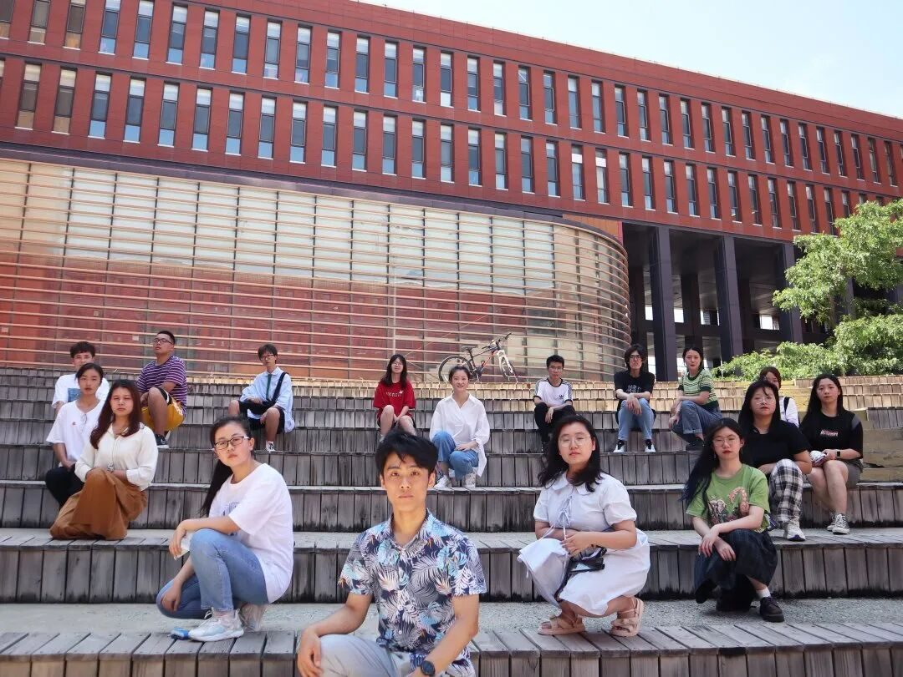

【徜扬恣肆·六】蝉鸣绘夏图，行者醉扬州
蝉鸣绘夏图 行者醉扬州
炎炎夏日将北方大地封成一块琥珀，
在这燥闷的天气里，
南下去往运河一带探寻水乡的
温婉细腻应当是个好选择，
但突如其来的疫情打乱了
行者们的计划。
好在当代互联网科技快速发展，
我们得以通过网络进行线上调研。
数字展厅使行者们对扬州风物有了初步了解。
“六月扬州百卉悠，瘦湖潋滟画中游”，瘦西湖似是穿越了岁月尘埃，曳着古朴优雅的裙摆款款走来。
另一边，关东街裹着一身人间烟火气，用色香味俱全的美食招待着旅人们。高处是大明寺巍峨的身姿，古钟响彻黄昏，薄雾中驱不散的是扬州特有的城市气息。

双博馆、大运河博物馆、扬州八怪纪念馆……除了美景美食，扬州的文化更值得一探。
它被扬州浓郁的历史底蕴孕育，又融入到古运河中随其一同流淌，影响了周边广大区域，成为淮扬文化必不可少的一部分。
“试问江南诸伴侣，谁似我，醉扬州”，千百年前苏子的赞叹穿越历史长河，而当代的行者们也微醺于扬州之美。
美景、美食、美人，还有那同古运河一道蜿蜒沉淀至今的灿烂文化，无不让人印象深刻、拍手赞叹。
而行走在文化研究与保护道路上的行者们也当认清自己的责任，积极履行义务，让每一个如珍珠般夺目的优秀文化不被历史洪河埋没，成为所有华夏人民心中的瑰宝。

最后，感谢学长学姐辛勤的付出为团队打下的坚实基础，也感谢所有行者们的努力，是大家将这次或许并不完美的实践活动变得愉快而有意义。
无悔入行者，前路必无疆！

来源 | 行者无疆实践团
文字 | 汪浩晴
排版 | 赵庭芳
审核 | 付媛 康艳虎